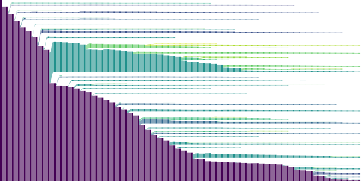

HACCYTREES
Welcome to haccytrees! This is a python library to create, read, and process large merger-tree forests created from HACC simulations, such as Last Journey.
Documentation and usage examples are provided at https://argonnecpac.github.io/HACCyTrees/. The code is available at https://github.com/ArgonneCPAC/HACCyTrees.
{kind=link}
Installation
To install haccytrees, you will need to clone the repository and then use pip.
git clone https://github.com/ArgonneCPAC/HACCyTrees.git
cd haccytrees
# Using pip to install the package
pip install .
Requirements
These python packages will be automatically installed if they are not yet in your python library:
numpy: Python array library
numba: used to speed up iterating across arrays and trees
h5py: a python HDF5 interface
For visualizations, these additional packages are required:
matplotlib: General purpose plotting library
drawSvg: used to create SVG drawings of trees
These two packages are required to run the HACC to haccytrees conversion: